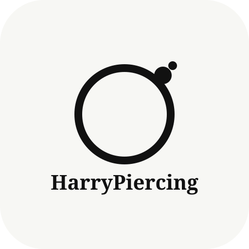

I’m a 25 year old aspiring professional piercer with a longstanding interest in body piercing, body modification, creativity, and self-expression.
For a long time, I followed a different path and studied Computer Science at university. While I enjoyed the problem-solving side of technology, over time I realised it wasn’t something I felt genuinely passionate about long term. After a lot of reflection, I found myself coming back to something I had always naturally gravitated towards creativity, aesthetics, detail, and body modification.
My fascination with piercing really began around two years ago when I started getting pierced myself. What initially started as personal interest quickly turned into genuine curiosity about the process, jewellery, anatomy, healing, placement, and the level of technical precision involved.
Before long, I found myself becoming completely invested in planning my own ear curation. Carefully thinking about balance, placement, anatomy, jewellery choices, and how different piercings work together aesthetically. I’ve currently planned out around 27 future piercings for myself, and while that might sound excessive to some people, for me it reflects something I genuinely enjoy: creativity, detail, and thoughtful planning.
Alongside multiple lobe and cartilage piercings, including more unique pieces such as vertical and horizontal industrials, my own experiences have given me a real appreciation for both the client journey and the patience involved in healing. I understand firsthand the excitement, nerves, trust, healing process, and aftercare that comes with body piercing and I think that perspective has only deepened my appreciation for the profession.
What draws me most to piercing is the combination of technical precision, professionalism, creativity, and people. I really value the idea of helping someone feel comfortable, informed, and confident in an environment where trust matters. I also appreciate that great piercing goes far beyond aesthetics. Hygiene, safety, communication, patience, and continuous learning are all things I take seriously.
In preparation for pursuing this path professionally, I’ve independently completed BBV (Bloodborne Virus), First Aid, and CPR training, while continuing to build my knowledge of the industry and professional practice.
Outside of piercing, I enjoy drawing and have recently found myself reconnecting with art after many years away from it. Creativity has always been something I naturally enjoy, whether through drawing, design, or aesthetics in general. I’m also probably a bit of a nerd when it comes to strategy and simulation games the sort that reward patience, planning, and figuring out how systems work.
Alongside all of this, I’ve spent several years working in customer facing retail, which has helped me develop confidence communicating with people, staying professional under pressure, and building positive experiences for others.
At the moment, I’m actively working towards building a future within the body piercing industry through continued learning and, hopefully, an apprenticeship opportunity.
Thanks for stopping by and if you’ve made it this far, feel free to follow along with my journey.